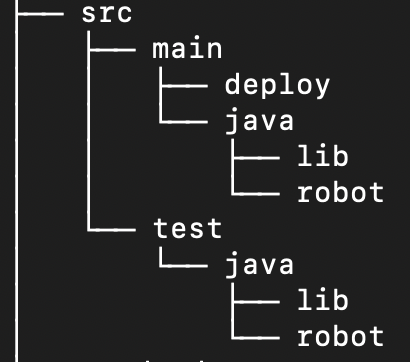
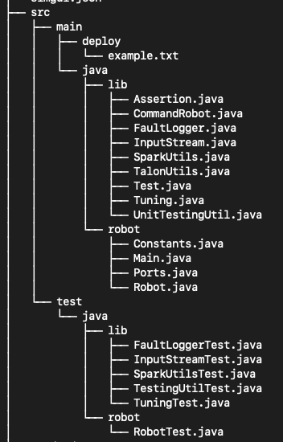

File Structure
Introduction
This guide explains the structure of a typical robotics project, focusing on how files and directories are organized to maintain a clear codebase. It covers the distribution of library versus robot-specific code and the purpose of each major file.
All of the source code for a project is in the src folder. Within that folder, there is the following directory structure:

There are two top level directories under src: main, for code that runs on the robot, and test, for unit tests.
We're going to ignore the deploy directory, since it isn't very relevant to us right now. That leaves us with the contents of main/java and test/java (both of which contain Java files). The robot code in main/java is split into a lib folder, which contains library code that is not specific to one particular robot, and a robot folder, which contains the code to control a particular robot. Classes in the robot folder generally use lib classes.
You may notice that the test/java directory actually has the same structure. This is because our test folder aims to test code in main, and so inside of test we mirror the structure of main. If we are a file Foo.java at the address main/java/lib/Foo.java, our test for that file would be at the address test/java/lib/FooTest.java.
Now, let's look at a tree that includes the actual files as well as directories:

There's a lot here, but we'll go through it piece by piece.
One thing you might notice is that the lib folders are very populated. That's because one of the main points of using this template is that it has library code from the SciBorgs, which you can use in your project. You will not be writing code in the lib folders, but you will be using the utilities from those folders. But you don't have to worry about that right now, we'll introduce specific library code when it is relevant.
So we're just going to focus on the contents of the robot directories. Let's start with main/java/robot:
Constants.java: contains constant values that we use in our code. It can have things like field measurements, robot dimensions, etc.- Constant names are written in all caps with underscores between words (i.e. MAX_SPEED)
- Currently, there is one constant in this file, called PERIOD (the value is 0.2 seconds). The PERIOD or tick rate represents how often the code is run. In this case, the roboRIO runs our code every 0.2 seconds.
Main.java: themainfunction in this file is what is actually run when the code starts up. You basically don't have to think about it at all.Ports.java: this is where we store the ports of our electrical components. More on this soon!- Since you won't be connecting to a physical robot for this project, you'll be making up random port numbers.
Robot.java: this is the center of the robot code.Robot.javacontains instances of all of the subsystems and the Xbox controllers. It runs the CommandScheduler. In fact, all that theMain.javareally does is start upRobot.java.
As you go through a project, you will create more directories and files within main/java/robot for your robot code.
Next up, we'll go over test/java/robot. This directory only has one file currently:
RobotTest.java: If you look at the contents of this file, it is a test class with a single test calledinitialize. All that this test does is create a new instance ofRobot.java. So this test will only fail if initializing the robot throws an error. This tiny little test is actually very important, because it will catch if there is aNullPointerExceptionin our code (if we try to use something that isn't initialized).
In a project, you will add files to test/java/robot to test the new classes that you create in main/java/robot. And you'll be testing more specific behavior than RobotTest.java does!